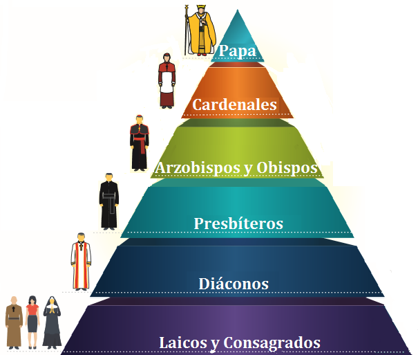

La Iglesia Católica tiene una estructura jerárquica bien definida, donde cada nivel tiene funciones y responsabilidades específicas. A continuación, se explica la jerarquía desde el Papa hasta los laicos.
El Papa es el líder supremo de la Iglesia Católica y es considerado el sucesor de San Pedro. Él reside en el Vaticano y es el encargado de guiar a todos los fieles católicos alrededor del mundo. Además, el Papa tiene la autoridad final en temas de doctrina y moral.
Los Cardenales son los principales consejeros del Papa y tienen la responsabilidad de elegir a un nuevo Papa en caso de que el puesto quede vacante. La mayoría de los cardenales son obispos de diócesis importantes, aunque algunos trabajan directamente en el Vaticano.
La jerarquía de la Iglesia Católica puede resumirse en el siguiente orden de autoridad:
Esta estructura jerárquica ayuda a la Iglesia a mantener una organización y a garantizar que los fieles reciban una guía espiritual adecuada en todos los niveles.